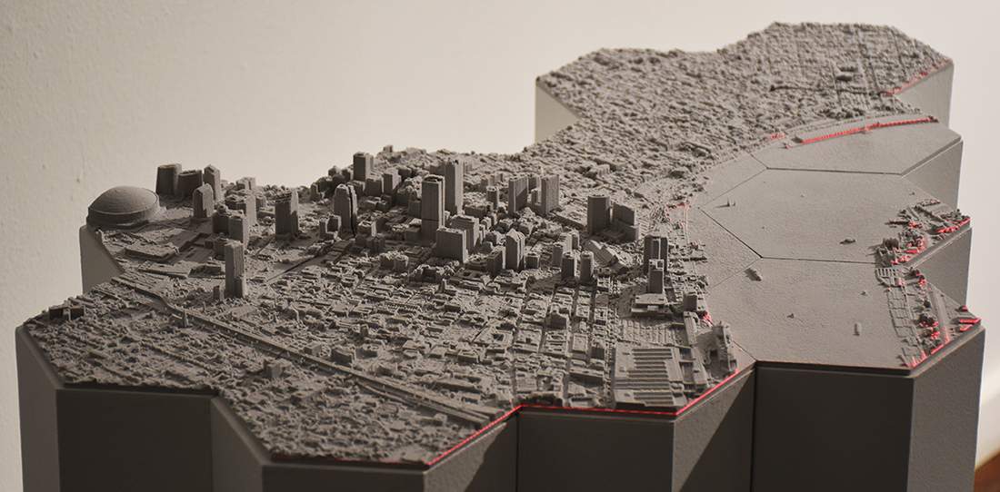
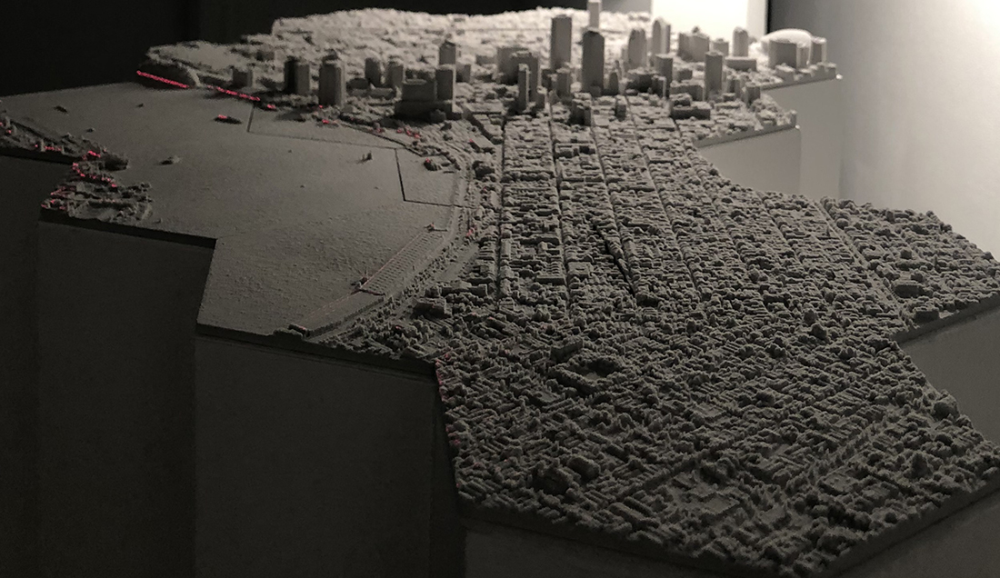
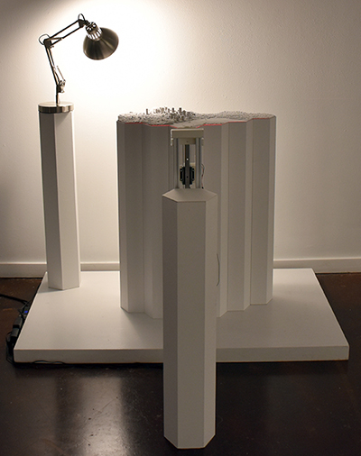

2019, Kinetic Installation
Art Gallery, ACM Creativity and Cognition, Virtual Showcase



What if New Orleans sinks beneath the waves by the end of the century? How can we save our community and its vibrant culture?
Shifting Datum critically examines the relationship between New Orleans - a city much of which is at or below current sea level - and changes in relative sea level. Shifting Datum casts a red laser line moved by a linear actuator across 3D printed models of New Orleans, marking the projected relative sea level rise year by year for this century. Through the Shifting Datum, we hope our audience will become more mindful about our environment and think about how to coexist with nature.
Collaborators: Brendan Harmon, Hye Yeon Nam, Michael Pasquier
Exhibition
2021 June, Art Gallery, ACM Creativity and Cognition, Virtual Showcase
2019 May, Baton Rouge Gallery, LA
Paper
2021 June, ACM Creativity and Cognition Conference